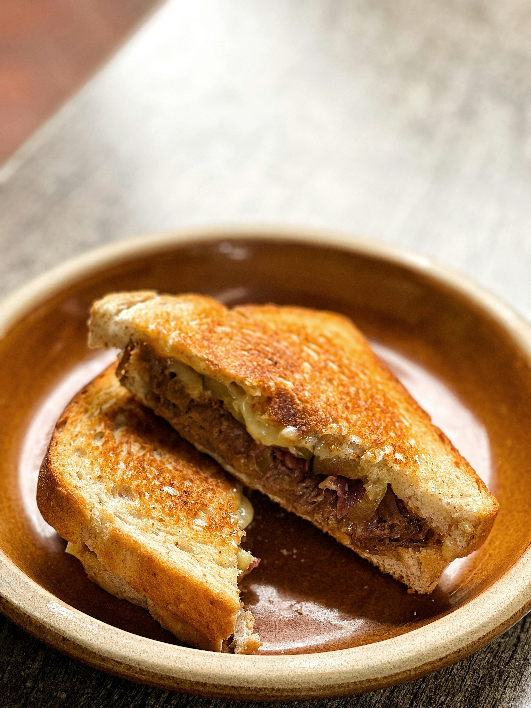

Grilled Cheese Sandwich

Photo by
Edward Nguyen
on
Unsplash
Crispy Bread and Melty Cheese
Grilled cheese is a simple sandwich made with crispy golden bread and
melted cheese.
It is quick to prepare and makes a great lunch or snack.
Ingredients
- 2 slices bread
- 2 slices cheese
- 1 tablespoon butter
- Pinch of black pepper
Steps:
- Butter one side of each bread slice.
- Place cheese between the unbuttered sides.
- Heat a pan over medium heat.
- Place the sandwich in the pan.
- Cook until the bread becomes golden.
- Flip and cook the other side.
- Serve while hot.